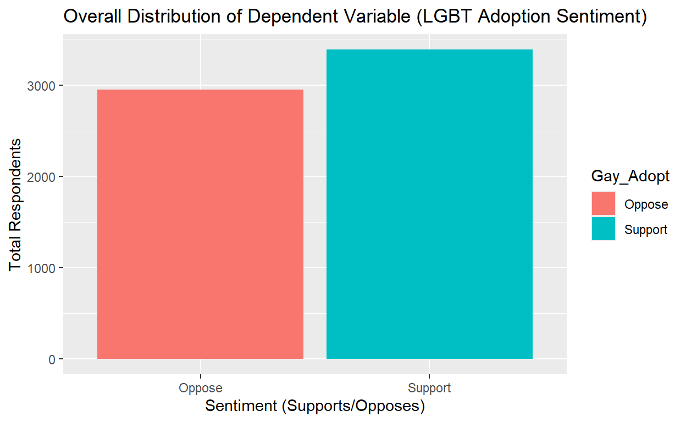
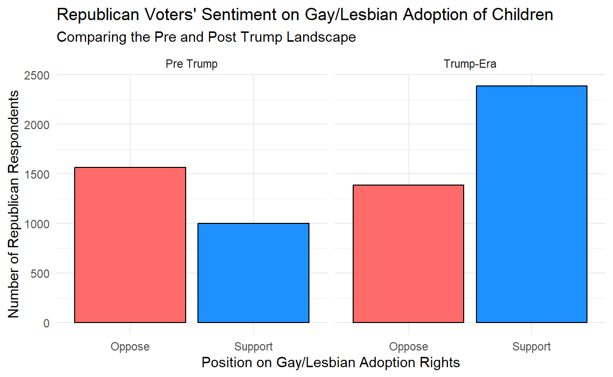

My final project
I am interested in exploring data related to…
the immense changes we have witnessed occuring within the Republican party since the rise of Donald Trump. I would like to use various figures and statistical evidence to show numerous ways in which the Republican base has shifted since Donald Trump’s rise to prominence during the 2016 election cycle. I want to analyze whether Trump’s rise has fostered an increase in hateful rhetoric in the United States.
To what extent has Donald Trump and the Maga-Era of Republican politics changed the compositions and backing of the GOP, how are these voters different/similar to Republican voters in the past, in regards to the social context of just how different politics feel to compared how they did during the Obama and Bush administrations, for instance.
I believe that Donald Trump’s rise to prominence ahead of the 2016 presidential election led to an increase in prejudiced views/values being held by United States citizens, as his rhetoric and overall demeanor fostered a resurgence in anti-progressive views.
I believe that Donald Trump’s rise as the leader of the Republican party stems from a multitude of complex social, economic, and political factors. That is not exactly what I seek to answer. We all know that Donald Trump came to the scene different than any other politicians that remain in our recent memories, harping on racial messaging and xenophobic ideas, Donald Trump has managed to engage with an entirely new section of the political community that in previous elections did not care much for politics. He has become the living light of American conservatism by combining these new tactics with the historical agenda of the GOP. Economic conservatism combined with cultural conservatism has allowed Trump’s grip on middle America to be virtually unquestioned, as seen in his successes across the board in nearly every American county in the 2024 election.
While Donald Trump has been generally careful to not say anything too outwardly offensive on a public platform, there is no doubt that his base and a large portion of his supporters carry such views and see Donald Trump as a protector of these forms of prejudice.
So, in the light of Trump’s rise and his recent re-taking of the White House, has his, now, decade of political prominence resulted in an increase in hateful rhetoric and ideas. In this article, we will dive into measurements of support for LGBT+ families being able to adopt children. Has there been an increase in opposition to this basic right of an adult individual, or, in spite of Trump’s volatility and perceived bigotry, is our society becoming more pluralistic?
Most of us still clearly remember when gay marriage was officially legalized under the Obama administration. This enactment was met with plenty of conservative backlash, so, now, over a decade later in 2024, do conservatives, and particularly Trump voters hold more, less, or similar prejudice towards the LGBT+ community than during Obama’s terms.
Explanatory Variable: - Before Trump era vs. After Trump Era - This is because we are trying to find a correlation in the rise of anti-LGBT sentiment starting during and continuing after Trump’s ascension.
Outcome Variable -Is there more opposition to LGBT+ adoption? -Increases in the proportion and magnitude of Americans in opposition to LGBT+ adoption since 2016 would indicate that my hypothesis, is indeed correct.
In other words, support for my hypothesis would be found if I do in fact find sufficient evidence that hate or negative feelings towards the LGBT+ community and its members’ attempts to start families has risen since Trump first started captivating Americans by the millions.
Describe the Data Source: The data used for this webpage was sourced from the American National Election Studies (ANES). ANES is a long-running American organization that has collected a plethora of different data points on American elections dating back to near the nation’s inception. Aside from elections, ANES also regularly surveys and conducts questionnaires with the American people, in order to gauge political sentiments, momentum, or trends, within the American voting base during and in-between election cycles. ANES, for years, has allowed political scientists to sift through seemingly endless data about the American voter. In this study, wherein I am attempting to measure whether or not Donald Trump, since his rise to political prominence ahead of the 2016 election, has, through his rhetoric and campaigning, increased anti-LGBT sentiment in the Republican voter base. Namely, in the form of opposition to the right afforded to LGBT+ couples to adopt children.
How are the independent and dependent variables measured?: In this data set, there are many, many potential variables for analysis. For my own purposes, I have set aside the independent and dependent variables. In this study, the independent variable will be whether or not the sentiment collected from a respondent is from before, or after Trump’s rise. (For the graphs, these will be separated into ‘Pre-Trump’ and ‘Trump-Era’). This independent variable is measured by the time split which I have devised, 2016, which was the year Trump’s first campaign really picked up and resulted in his victory. Before 2016 is categorized as Pre-Trump Sentiment, where as anything collected since 2016, is to be identified as a Trump-Era sentiment, belief, response, etc. The dependent variable in this study is the respondent support for LGBT+ adoption. This is the dependent variable because we are expecting to see a change in this value, when the independent variable (pre or post Trump divisions) are introduced. This dependent variable is measured simply by respondents’ answer to the ANES question regarding their support, or their opposition for such adoption openness.
#Preliminary Data Wrangling
I will be utilizing the below three data frames to see if there is a rise in anti-gay sentiment among republican voters, before vs. after Trump’s rise.
Notes for renaming: VCF0004 is Year, VCF0302 IS Party Identification, VCF0878 is thoughts on gay adoption
total_dep_var <- anes_republican |>
group_by(Gay_Adopt) |>
summarize(Total = n())
total_dep_var |>
ggplot(aes(x = Gay_Adopt, y = Total, fill = Gay_Adopt)) +
geom_bar(stat = "identity") +
labs(
title = "Overall Distribution of Dependent Variable (LGBT Adoption Sentiment)",
x = "Sentiment (Supports/Opposes)",
y = "Total Respondents")
Sources: American National Election Studies (ANES)
In this plot of our dependent variable, we can see that throughout the two eras that have been devised, there are around ~6500 respondents,with a slight positive edge being given to the support side, which appears to have about 500 more affirmations than that of the oppose category.
ggplot(anes_republican, aes( x = Gay_Adopt, fill = Gay_Adopt)) +
geom_bar(color = "black") +
facet_wrap(~Era) +
#Separate colors for oppose and support
scale_fill_manual(values = c("Oppose" = "indianred1", "Support" = "dodgerblue"))+
labs(
title = "Republican Voters' Sentiment on Gay/Lesbian Adoption of Children",
subtitle = "Comparing the Pre and Post Trump Landscape",
x = "Position on Gay/Lesbian Adoption Rights",
y = "Number of Republican Respondents"
) +
theme_minimal() +
#remove legend
theme(legend.position = "none")
Source: American National Election Studies (ANES)
#Second Visualization/Table Showing the Totals
library(knitr)
sum_up_table <- anes_republican |>
group_by(Era, Gay_Adopt) |>
summarize(Count = n())
kable(sum_up_table, col.names = c("Era", "Position on LGBT+ Adoption of Children", "Number of Respondents"),
caption = "Pre and Post-Trump Sentiment on LGBT Child Adoption")| Era | Position on LGBT+ Adoption of Children | Number of Respondents |
|---|---|---|
| Pre Trump | Oppose | 1564 |
| Pre Trump | Support | 1001 |
| Trump-Era | Oppose | 1389 |
| Trump-Era | Support | 2389 |
Source: American National Election Studies (ANES)
#Regression Output Model (Logistic Regression)
anes_republican <- anes_republican |>
mutate(Gay_Adopt_Numeric = ifelse(Gay_Adopt == "Support", 1, 0))
model <- glm(Gay_Adopt_Numeric ~ Era, data = anes_republican, family = "binomial")
summary(model)
Call:
glm(formula = Gay_Adopt_Numeric ~ Era, family = "binomial", data = anes_republican)
Coefficients:
Estimate Std. Error z value Pr(>|z|)
(Intercept) -0.44625 0.04048 -11.03 <2e-16 ***
EraTrump-Era 0.98854 0.05270 18.76 <2e-16 ***
---
Signif. codes: 0 '***' 0.001 '**' 0.01 '*' 0.05 '.' 0.1 ' ' 1
(Dispersion parameter for binomial family taken to be 1)
Null deviance: 8763.1 on 6342 degrees of freedom
Residual deviance: 8400.8 on 6341 degrees of freedom
AIC: 8404.8
Number of Fisher Scoring iterations: 4#Reflecting on the Results
The first two code chunks and resulting outputs in this section involve our main area of interest. When split by pre and post-Trump responses, we can actually see, that since 2016, not only has the number of supporters of LGBT+ adoption risen, but the proportion has also increased drastically. Therefore, the initial hypothesis proposed at the beginning of this study, is likely incorrect. Regardless of his negative sentiment towards racial out groups and other marginalize members of society, Republican voters have not grown increasingly in opposition towards the basic rights of LGBT+ individuals.The nicely formatted table, along with the bar plot, tell us that before Trump’s rise to prominence, of ANES respondents, 1,564 individuals opposed LGBT+ adoption, while 1001 supported it. This totals out to 2,565 Pre-Trump Respondents. Using some simple calculation, before Trump, ~60.1% of Republican voters did not agree with the idea that LGBT+ individuals and couples should be able to adopt their own children. As we move to analyze the figures, Post-Trump, the ultimate surprise is born. The table and bar plot tell us that while support for LGBT+ adoption rose drastically (all the way to 2,389 responses), opposition for the same policies actually DECREASED to a total of 1,389 in the negative. Using the same basic principles of addition and division, this yields a total of 3,778 responses, and, ~63.2% of them supported rights to LGBT+ adoption.
The pre and post-Trump eras made a complete flip in terms of Republican voter support for LGBT+ adoption. With a total percentage point swing of about 25%, and in an even larger, and therefore more valid sample, Republicans now almost overwhelmingly believe adoption rights should be reserved to all families, regardless of sexual orientation.
Clearly, the hypothesis of this experiment was flawed, in some way. As, most scholars, researchers, pundits, and casual observers would agree that Donald Trump introduced an unprecedented amount of bigoted speech and alienation of certain Americans in his 2016, 2020, and now 2024 presidential campaigns. Regardless of this, Republicans have markedly increased their support for the rights of LGBT+ people and families to adopt their own children and start families. In the conclusion to this study, I will explain a few reasons why I think this may have occured.
Moving to the logistic regression. The x-intercept of ~ -0.44 suggests that yes, in fact, Pre-Trump Republican voters quite strongly were in opposition to endorsements of LGBT+ adoption. The highly positive nature of the Trump-Era coefficient, of ~0.99, represents the strong swing of this reality in the Trump-Era, and that a Republican voter is veritably much more likely to support LGBT+ adoption than a Republican voter from times past.
Finally, the p-value yielded by coding for the summary of the ‘model’ came out to be ‘<2e-16’, an incredibly small number, much smaller than the alpha = 0.05. Because the p-value is less than the alpha, we reject the null hypothesis. This suggests that Donald Trump’s presidency had the opposite effect that I expected and in fact, he led to an increase in the amount of support of LGBT+ adoption among Republican voters. While this is important in confirming that my hypothesis was incorrect, I do not think this means we can confidently claim Donald Trump actually caused this rise, and instead, the timing of his administration combined with several factors that independently caused the rise in support for LGBT+ adoption, most likely that our society is overall progressing towards higher inclusivity.
1 paragraph (i) summarizing results and assessing the extent to which you find support for your hypothesis; (ii) describing limitations of the analysis and threats to inference (missing data, confounding, etc), and stating how you could improve your analysis if you had more time/money. (2pts)
As I have already covered, the results of this test DISPROVE my hypothesis, to me, this is unfortunate, but eye-opening. To say it is not the best feeling to be wrong about a confidently made and logically linked hypothesis, would be a dramatic understatement, but that does not mean that something cannot be learned here. Despite what I understood about the Republican Party, especially contemporarily, as it continues to play-out its MAGA era, I was incorrect. Despite his brutish campaigning, verbal attacks on women, past history of misconduct, allegations of racism, homophobia, and other outrage against the party he belongs too, Donald Trump has somehow overseen an era where his voting base now strongly supports the protection of a key right of LGBT+ Americans. The modern Republican party supports LGBT+ adoption at a rate >63%, whereas, before Donald Trump, opposition to LGBT+ adoption sat at a similar number of 60%. In the past decades, election cycles, there has been a major ‘flipping of the switch’ within the Republican voter base clearly.
In hindsight, I believe that this change is due to the overall progressions our society has made. Regardless of debates between the Republican and Democratic Party, which, especially in this past election cycle, was home to interesting advertsiements declaring that Kamala Harris was serving ‘they/them’ (an offensive remark regarding the use of gender non-specific pronouns by non-binary individuals), as opposed to Trump who worked for “YOU!”, America, in recent years has become a more accepting, liberal place. As is the trend throughout all of American history, our society, culture, and other enterprises slowly, yet surely, keep up with the times and adjust to our perceptions of each other. Now, in the 21st century, it has never been safer or opportune to live a publicly or openly gay life. Gay marriage has been legal for over a decade now, and it has become almost a ‘fact of life’ to many. Regardless of what Donald Trump says, and what some of his fringe supporters may feel, the overall trend in America has been towards liberalization and the overall increasing openness of our institutions and society.
The limitations to this study were likely the limited scope of its nature. If I had access to even more resources, I could perform a full, cross-sectional study of various points and values regarding gay rights in the United States. Shifting the focus to other values aside from gay adoption would allow for a more in-depth look into Republican sentiments about their gay counterparts, and maybe, somewhere, since Trump’s rise, there has been an increase in the opposition to certain LGBT+ rallying points.
At the end of the day, this study was very informational. We have learned that we cannot simply accredit Donald Trump with racial and sexual antagonism, as the numbers show that his supporters are in favor of some basic rights to these individuals, and for that reason, the whole party cannot rightfully, at all, be discounted as homophobic or anti-gay, no matter what you think of Donald J. Trump, the man.